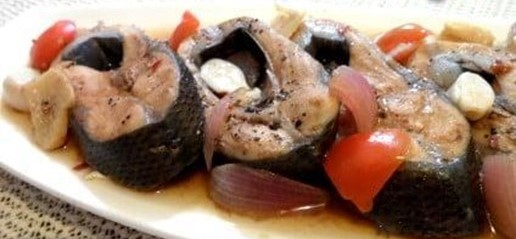

Paksiw na Tyan ng Bangus
What is Paksiw na Tyan ng Bangus?
Paksiw na bangus Recipe is the one of the original way of cooking bangus. You can add ampalaya and talong. The juices of ampalaya and talong (bitter melon and eggplant) some how enhance the paksiw flavor of bangus.
Ingredients
Bangus (Milkfish) Belly
1/2 head garlic, crushed
1 thumb size ginger cut into thin slices
1 medium size onion, quartered
1 tbsp. whole black pepper
1/4 cup vinegar
3 whole green sili
1 small ampalaya (bitter melon), sliced about ½ inch thick
2 small eggplants (aubergines), sliced diagonally about ½ inch thick
cooking oil
salt
Pepper
Instructions / How to Cook
1. Clean the Bangus.
2. Wash fish thoroughly drain and slice diagonally.
3. In a casserole put garlic, onion and ginger at the bottom.
4. Arrange sliced bangus side by side.
5. Add 1 cup of water and 1/4 cup vinegar or 3 tbsp. sampalok sinigang mix.
6. Put on top vegetable, green sili and black pepper.
7. Season with salt and drizzle with cooking oil.
8. Cover and simmer in a medium heat for 8–12 minutes or until fish is cooked.
9. Serve hot with Rice.